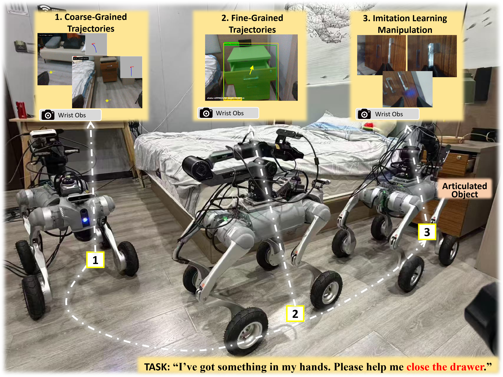
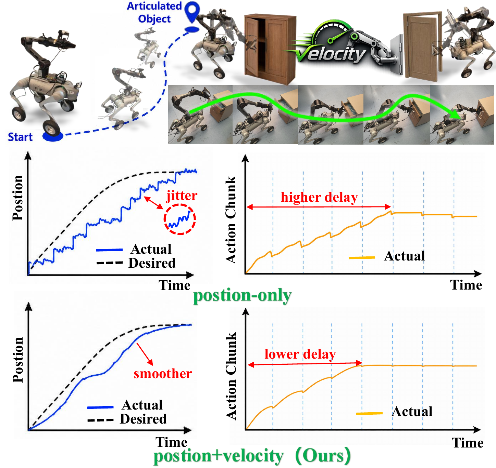
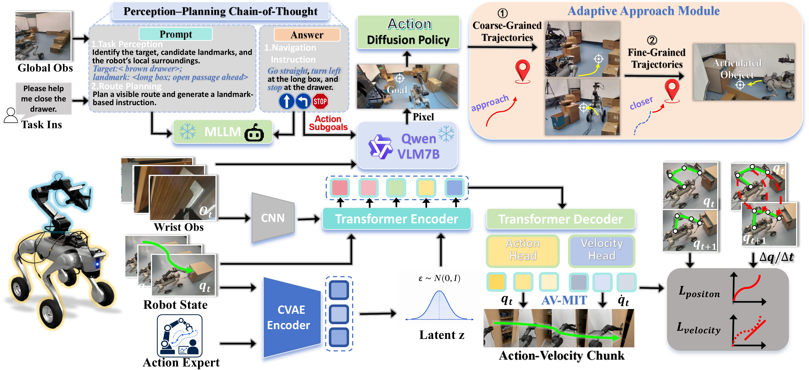
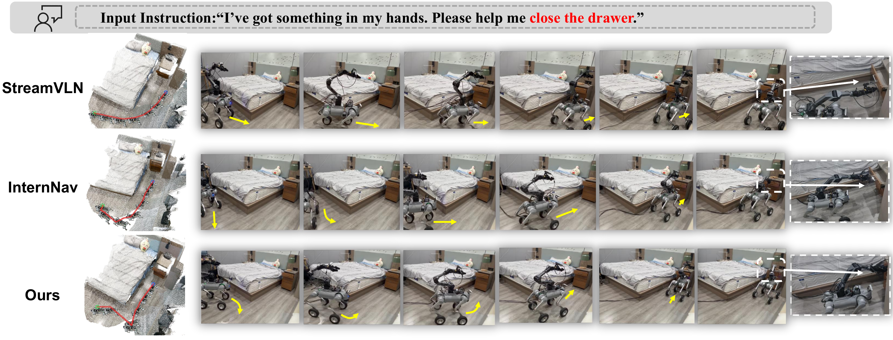

Position-only
TONAV: Task-Oriented Navigation and Action-Velocity Chunk Learning for Articulated Object Quadrupedal Mobile-Manipulation
Anonymous Submission
A unified framework that connects manipulation-ready navigation with smooth, stable continuous-contact interaction.
Explore experimentsProject overview
From navigation to interaction

Overview video
Task-oriented approach, adaptive refinement, and articulated-object interaction.
Paper
Abstract
Quadruped loco-manipulation requires two tightly coupled capabilities: reaching manipulation-ready configurations and maintaining stable contact throughout articulated-object interaction. However, existing methods often terminate navigation near the target, leaving a gap between reachability and manipulation readiness, while tracking lag, motion jitter, and contact instability limit continuous interaction.
To address these challenges, we present TONAV, a unified framework integrating task-oriented navigation with action-velocity chunk learning. First, we introduce a position-velocity-coupled teleoperation framework that explicitly captures motion dynamics to improve master-follower consistency and collect smooth, temporally consistent demonstrations. Next, task-oriented navigation leverages vision-language reasoning to decompose high-level instructions into executable subgoals and adaptively refine the robot base toward a manipulation-ready configuration.
Finally, action-velocity chunk learning jointly models joint positions and their temporal transitions under velocity supervision, enabling smooth and stable sustained-contact manipulation. Real-world experiments across diverse articulated-object tasks demonstrate that TONAV achieves higher success rates in both task-oriented navigation and complete loco-manipulation, mitigating the navigation-manipulation gap and improving continuous-contact interaction.

Method
Framework

Real-world evaluation
Experiments
Teleoperation study
High-Frequency Teleoperation Comparison
Position–velocity-coupled (Ours)
Task
Complete pipeline
Close drawer
P–V control comparison
Close drawer

P–V Teleoperation
Close drawer
01
End-to-end:
Complete mobile manipulation experiments, from navigation to final object interaction.
02
Comparison:
Comparison of different manipulation methods from the same initial configurations, using a single navigation run to reach the manipulation-ready region for multiple manipulation trials.
03
Teleoperation Data:
- P–V Teleoperation Validation: Comparison of different navigation methods in reaching manipulation-ready configurations, validated through P–V teleoperation.
- Navigation Ablation: Ablation of PP-CoT in TONAV and comparison of different LLMs (Doubao-Seed-2.1-Pro and Qwen-3.7-Max (Ours)) for manipulation-oriented navigation.
Reference
BibTeX
BibTeX metadata has not been provided.